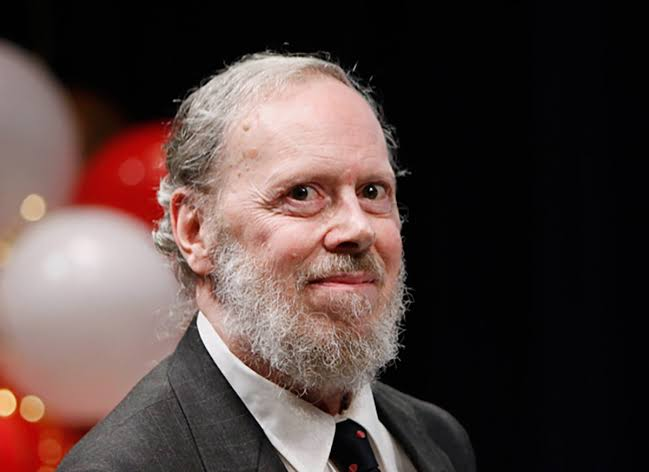

Dennis Ritchie
Dennis Ritchie “Father of the C programming language” also created UNIX operating system
along with
his long-time colleague Ken Thompson. He was an American Computer Scientist. In 1983 he received the
Turing Award from the ACM, the Hamming Medal in 1990 from the IEEE and in 1999 the National Medal of
Technology from President Clinton. Ritchie was the head of the Lucent Technologies System Software
Research Department when he retired in 2007.
Modern computing would not have existed without Dennis Ritchie, Without C there is no UNIX, Windows,
Linux, C++, Google Chrome, Safari, Firefox, MacOSX, Playstation, Xbox and a lot of software and devices.
90% of applications in the world are written in C and that’s the reason Dennis Ritchie deserves a lot of
respect.
In 1967, Ritchie began working at the Bell Labs Computing Science Research Center. In 1968, he defended
his PhD thesis on "Computational Complexity and Program Structure" at Harvard under the supervision of
Patrick C. Fischer. However, Ritchie never officially received his PhD degree as he did not submit a bound
copy of his dissertation to the Harvard library, a requirement for the degree.[7][8] In 2020, the Computer
History Museum worked with Ritchie's family and Fischer's family and found a copy of the lost
dissertation.[8][9]
During the 1960s, Ritchie and Ken Thompson worked on the Multics operating system at Bell Labs. Thompson
then found an old PDP-7 machine and developed his own application programs and operating system from
scratch, aided by Ritchie and others. In 1970, Brian Kernighan suggested the name "Unix", a pun on the name
"Multics".[10] To supplement assembly language with a system-level programming language, Thompson created B.
Later, B was replaced by C, created by Ritchie, who continued to contribute to the development of Unix and C
for many years.[11]
During the 1970s, Ritchie collaborated with James Reeds and Robert Morris on a ciphertext-only attack
on the M-209 US cipher machine that could solve messages of at least 2000–2500 letters.[12] Ritchie relates
that, after discussions with the National Security Agency, the authors decided not to publish it, as they
were told that the principle applied to machines still in use by foreign governments.[12]
Ritchie was also involved with the development of the Plan 9 and Inferno operating systems, and the
programming language Limbo.
As part of an AT&T restructuring in the mid-1990s, Ritchie was transferred to Lucent Technologies, where he
retired in 2007 as head of System Software Research Department.[13]
More About C and Unix
Dennis Ritchie
Article
Talk
Read
Edit
View history
Tools
Appearance hide
Text
Small
Standard
Large
Width
Standard
Wide
Listen to this article
From Wikipedia, the free encyclopedia
Dennis Ritchie
Dennis Ritchie at the Japan Prize Foundation in May 2011
Born Dennis MacAlistair Ritchie
September 9, 1941
Bronxville, New York, U.S.
Died c. October 12, 2011 (aged 70)
Berkeley Heights, New Jersey, U.S.
Alma mater Harvard University (BS)
Known for ALTRAN
B
BCPL
C
Multics
Unix
Awards IEEE Emanuel R. Piore Award (1982)[1]
Turing Award (1983)
National Medal of Technology (1998)
IEEE Richard W. Hamming Medal (1990)
Computer Pioneer Award (1994)
Computer History Museum Fellow (1997)[2]
Harold Pender Award (2003)
Japan Prize (2011)
Scientific career
Fields Computer science
Institutions Lucent Technologies
Bell Labs
Doctoral advisor Patrick C. Fischer
Website bell-labs.com/usr/dmr/www/
Dennis MacAlistair Ritchie (September 9, 1941 – c. October 12, 2011) was an American computer scientist.[3]
He created the C programming language and, with long-time colleague Ken Thompson, the Unix operating system
and B programming language.[3] Ritchie and Thompson were awarded the Turing Award from the ACM in 1983, the
Hamming Medal from the IEEE in 1990 and the National Medal of Technology from President Bill Clinton in
1999.
Ritchie was the head of Lucent Technologies System Software Research Department when he retired in 2007.
Early life and education
Dennis Ritchie was born in Bronxville, New York. His father was Alistair E. Ritchie, a longtime Bell Labs
scientist and co-author of The Design of Switching Circuits[4] on switching circuit theory.[5] As a child,
Dennis moved with his family to Summit, New Jersey, where he graduated from Summit High School.[6] He
graduated from Harvard University with degrees in physics and applied mathematics in 1963.[5]
Career
Ken Thompson (left) and Dennis Ritchie (right), in 1973
Version 7 Unix for the PDP-11, including Dennis Ritchie's home directory: /usr/dmr
In 1967, Ritchie began working at the Bell Labs Computing Science Research Center. In 1968, he defended his
PhD thesis on "Computational Complexity and Program Structure" at Harvard under the supervision of Patrick
C. Fischer. However, Ritchie never officially received his PhD degree as he did not submit a bound copy of
his dissertation to the Harvard library, a requirement for the degree.[7][8] In 2020, the Computer History
Museum worked with Ritchie's family and Fischer's family and found a copy of the lost dissertation.[8][9]
During the 1960s, Ritchie and Ken Thompson worked on the Multics operating system at Bell Labs. Thompson
then found an old PDP-7 machine and developed his own application programs and operating system from
scratch, aided by Ritchie and others. In 1970, Brian Kernighan suggested the name "Unix", a pun on the name
"Multics".[10] To supplement assembly language with a system-level programming language, Thompson created B.
Later, B was replaced by C, created by Ritchie, who continued to contribute to the development of Unix and C
for many years.[11]
During the 1970s, Ritchie collaborated with James Reeds and Robert Morris on a ciphertext-only attack on the
M-209 US cipher machine that could solve messages of at least 2000–2500 letters.[12] Ritchie relates that,
after discussions with the National Security Agency, the authors decided not to publish it, as they were
told that the principle applied to machines still in use by foreign governments.[12]
Ritchie was also involved with the development of the Plan 9 and Inferno operating systems, and the
programming language Limbo.
As part of an AT&T restructuring in the mid-1990s, Ritchie was transferred to Lucent Technologies, where he
retired in 2007 as head of System Software Research Department.[13]
C and Unix
Ritchie created the C programming language and was one of the developers of the Unix operating system. With
Brian Kernighan, he co-wrote the book The C Programming Language, which is often referred to as K&R after
their initials. Ritchie worked together with Ken Thompson, who is credited with writing the original version
of Unix; one of Ritchie's contributions to Unix was its porting to different machines and platforms.[14]
They were so influential on Research Unix that Doug McIlroy later wrote, "The names of Ritchie and Thompson
may safely be assumed to be attached to almost everything not otherwise attributed."[15]
Nowadays, the C language is widely used in application, operating system, and embedded system development,
and its influence is seen in most modern programming languages. C is a low-level language with constructs
closely translating to the hardware's instruction set. However, it is not tied to any particular
hardware—making it easy to write programs on any machine that supports C.[16] Moreover, C is a high-level
language with constructs mapping to the application's data structures.